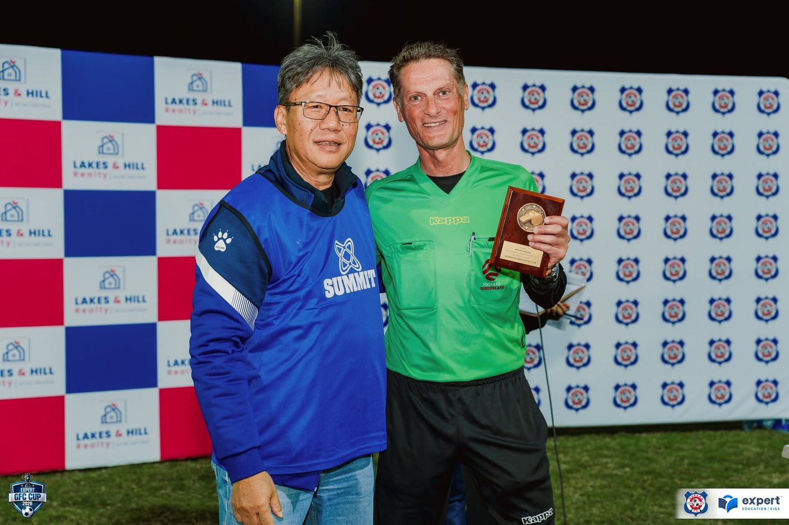
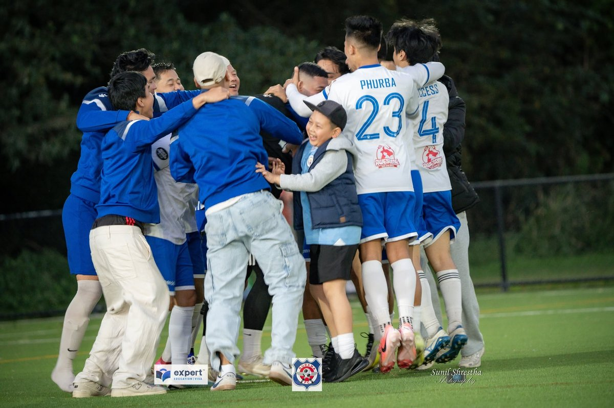

Founded in Brisbane in 2008, Gurkha Football Club Inc. (GFC) has grown into one of the established names in the Nepalese football community in Queensland.
What began as a platform for football enthusiasts to come together and play the game they love has developed into a strong and vibrant sporting community built around football, friendship, teamwork and connection.
For more than 18 years, Gurkha FC has proudly represented the Nepalese community across Brisbane, Queensland and interstate competitions throughout Australia. Our journey has been shaped not only by success on the field, but also by the people, supporters, volunteers, sponsors and families who continue to stand behind the club.
Today, with more than 100 registered members and a growing network of supporters and well-wishers, Gurkha FC continues to provide opportunities for players to compete, develop and become part of a welcoming football community.
Based in: Brisbane, Queensland — active since 2008
Community: Nepalese heritage
Plays: Football Queensland Multicultural league, Local Nepalese and Bhutanese Tournaments & the inter-state Nepalese tournaments
Best known for: 2× MFC Cup champions (2017 & 2019), plus 2026 Kings Cup Champions & Aussie Finance and Home Loans Cup Champions
Around 100 registered members, plus well-wishers who follow every season.

A trophy presentation moment from the Expert GFC Cup.
Since 2008, Gurkha FC has consistently competed in local leagues, Nepalese community tournaments and major interstate football competitions.
Over the years, the club has earned recognition through competitive performances and memorable tournament victories. Among our significant interstate achievements are two MFC Cup championships in Sydney, winning the competition in both 2017 and 2019.
The club continued its strong run in recent seasons with multiple trophies and finals appearances across 2023, 2024 and 2025. In 2025, Gurkha FC proudly lifted the 7th Expert GFC Cup and finished as runner-up in the Silverray Cup.
And the journey continues. 2026 has added another exciting chapter to the history of Gurkha FC, with championship victories at the Kings Cup and Aussie Finance and Home Loans Cup, along with a first runner-up finish in the QNFA League.
Every match, every tournament and every season represents another opportunity to carry the Gurkha FC name forward. See the full record →
We look out for each other before, during and after the final whistle. New arrivals to Brisbane get a team from day one, not just a fixture list.
The club exists to give something back to the community that built it — through the Expert GFC Cup, junior sessions, and an open door at every training night.
On the pitch we play to win. Off it, we want every player leaving the club a little fitter, a little more confident, and a little more connected than when they arrived.
Gurkha FC has always been about more than results and trophies. Football gives us an opportunity to bring people together, create friendships, support emerging players and strengthen connections within Brisbane's Nepalese community.
Our members come together through training, competitive football, tournaments, club events and community activities. At the same time, our supporters, volunteers, families and sponsors play an essential role in making everything we do possible.
As Gurkha FC continues to grow, we remain committed to creating an environment where people can enjoy football, compete with pride and feel part of something bigger.
Our vision is to continue building Gurkha FC into a respected, competitive and community-focused football club that proudly represents the Nepalese community in Brisbane and across Australia. We aim to:

Whether you're a player looking for your next football challenge, a supporter who loves the game, a business interested in partnering with the club, or simply someone wanting to connect with Brisbane's Nepalese football community — there's a place for you at Gurkha FC. Play with us. Partner with us. Support us. Grow with us.